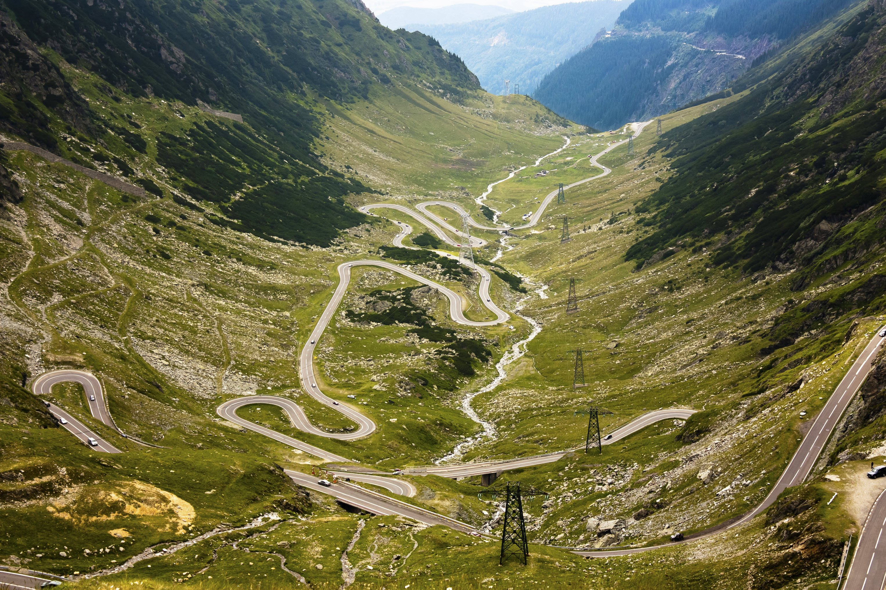
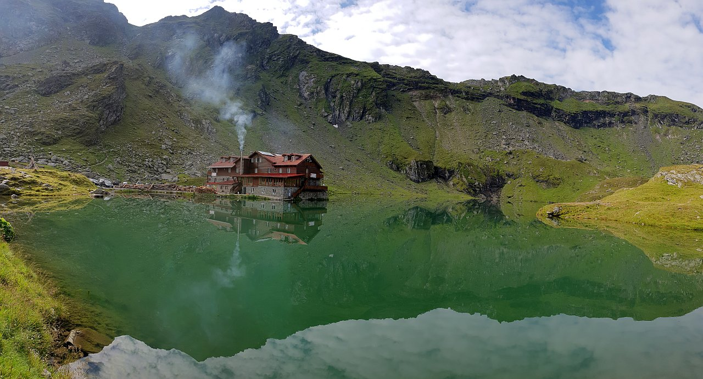
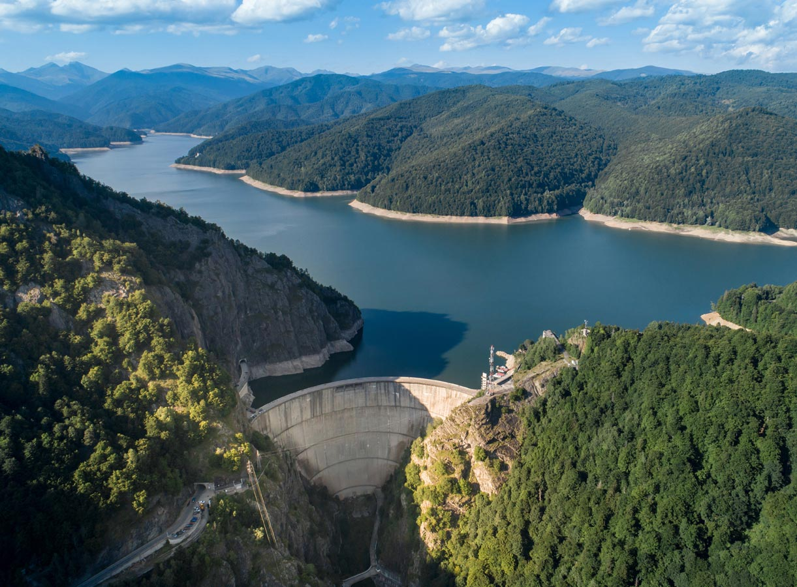

The Transfagarasan was built between 1970 and 1974 by military forces. After the 1968 invasion of Czechoslovakia by the Soviets, Nicolae Ceausescu had it built as a strategic military route to cross the mountains in the event the Soviets attempted a similar move into Romania. The builders used 6000 tons of dynamite to clear a path for the road on the northern side of the mountains (this is the most spectacular) and on the tunnel. The road has more tunnels and viaducts then any other road in Romania. On the highest point of the Transfagarasan near Balea Lake is located the longest, and highest tunnel of Romania. This tunnel is the connection between Transsylvania and Walachia.
Bâlea Lake is situated at the altitude of 2034 meters in the highest mountain chain of the Carpathians - The Făgărași Mountains. The first thing you will see here, if you come from the north, is the Bâlea Waterfall, which is only 10 km away from the lake and surrounded by breathtaking scenery. The waterfall and the lake on top of the mountains are must-see destinations for all nature enthusiasts. The glacier lake was formed when a glacier eroded the mountains and melted leaving behind one of Romania’ most beautiful lakes. The name Bâlea Lake comes from a local legend, a story of the shepherd Bâlea,who was in the mountains with his sheep when a bear attacked them. He fought the bear and managed to defeat it, chasing it into the woods. When the king heard of Bâlea’s bravery, he invited him to join his royal guard at the castle, where he fell in love with the king’s daughter. They decided to get married, but on their wedding day, a big storm occurred, that took their lives. The locals named the lake after the brave shepherd.
Vidraru Dam, one of Ceausescu's megastructures, was completed in 1966 on the Argeș River and created Vidraru Lake, with the primary purpose of serving a hydroelectric power plant. The dam's height is 166 meters (548 ft) and it can store 465 million cubic meters of water. The reservoir has a total shoreline length of 28 km (18 miles). The dam's construction took 5 and a half years. It required 42 km (26 miles) of tunnels, excavation of 1,768,000 cubic meters of hard rocks, 930,000 cubic meters of concrete and required the installation of 6,300 tons of electro-mechanical equipment. When completed, it ranked 5th in Europe, and 9th in the world. As 2020, Vidraru Dam is the 16th tallest dam in Europe. The Transfagarasan road passes over the top of the dam, which is 305 meters (1,006 ft) in length. Also, during the summer there are boat trips on the lake.
